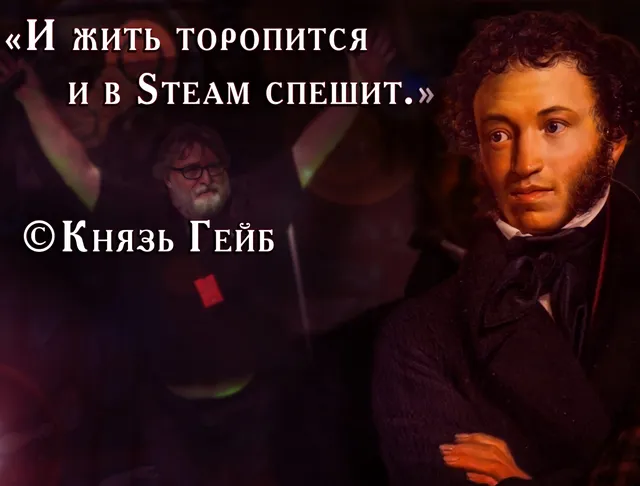

Все публикации с рубричным хэштегом «Пушкин». Рубрика определяется только хэштегом в тексте поста.
Все рубрики

«Мой Гейб самых честных правил, Когда не в шутку занемог, Цифру три сказать не мог, Он уважать себя заставил, И лучше выдумать не …